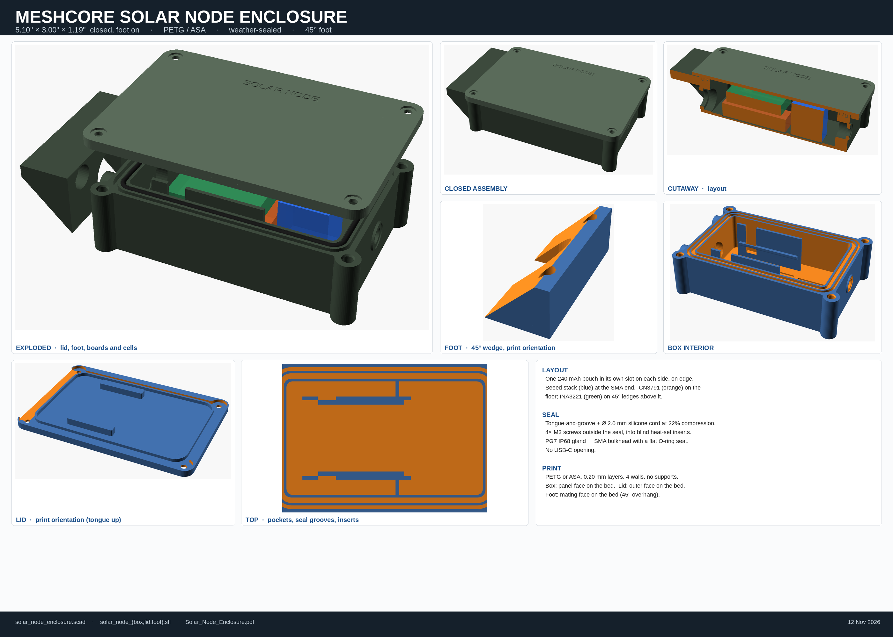
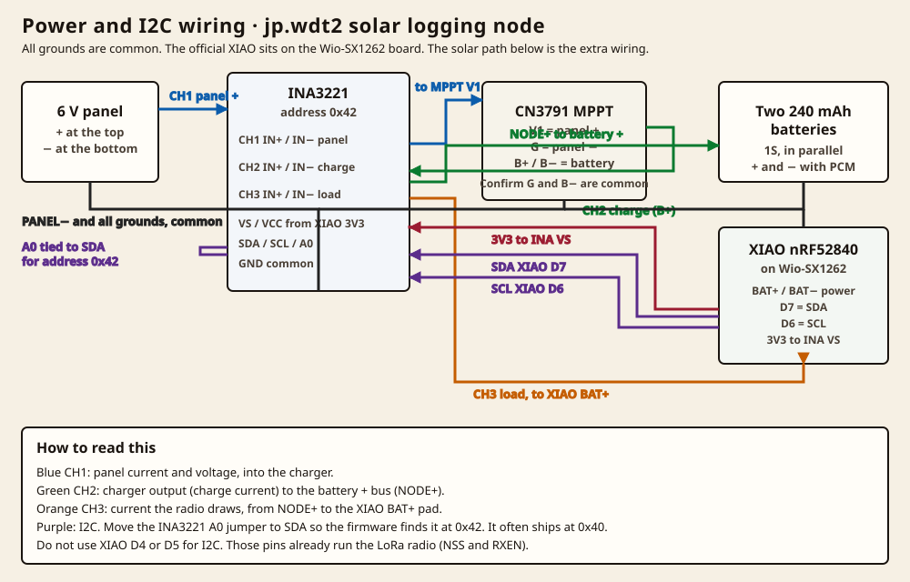

Guide
Build a Solar Logging Node
This is a MeshCore repeater on the Seeed XIAO nRF52840 + Wio-SX1262 that also logs battery, radio, and solar readings. It uses jp.wdt2 for that board, and One Stop 99.1.7 to show the log as a chart or a CSV file.
Test builds
Firmware jp.wdt2 for the Seeed XIAO nRF52840 + Wio-SX1262, and One Stop 99.1.7, have not been tested on radio hardware yet. Build and bench-test on a spare Seeed XIAO nRF52840 + Wio-SX1262 first. Do not flash this to a roof node until that test is done.
- Parts
- Drawings
- Print the box
- Wire it
- Flash the firmware
- First-time setup
- View the log
- If something is wrong
Parts
Links below were checked and open the real product page. Prices are not listed here. Parts without a link are described only, because no product page was verified for them.
| Part | What to get |
|---|---|
| Seeed Studio XIAO nRF52840 | The radio’s computer. This is the standard nRF52840, not the Sense board. |
| Wio-SX1262 for XIAO | The LoRa radio board. The Seeed XIAO nRF52840 presses onto it. Official stacked height is 0.83 in (21 mm). |
| MusRock INA3221, 3-pack | Three-channel voltage and current monitor. Use a board marked R100 (0.1 ohm) shunts. You only need one board from the pack. |
| CN3791 6 V MPPT charger | A common mini module about 1.77 × 0.79 in (45 × 20 mm). Pads: V1 = panel +, G = panel −, B+ / B− = battery. No product link is listed because a specific listing was not verified. |
| Two 240 mAh 1S Li-ion pouches | 502030-class cells with a protection circuit (PCM). Typical size is about 1.28 × 0.80 × 0.20 in (32.5 × 20.2 × 5.1 to 5.5 mm). The printed pockets can be edited if your cells differ. |
| 6 V solar panel | A small 6 V panel that can bond to the back of the box. The closed box is about 5.10 in long, 3.00 in wide, and 1.19 in tall, not counting the panel itself. |
| PG7 cable gland | IP68 gland, hole 0.50 in (12.6 mm), cable range about 0.12–0.26 in (3–6.5 mm), with its gasket. |
| SMA bulkhead, gasketed | D-hole 0.26 in (6.5 mm) with a 0.23 in (5.8 mm) flat. The box has a 0.41 in (10.5 mm) O-ring seat on the outside. |
| 2.0 mm silicone cord | 50–70 A hardness. Cut about 11.3 in (287 mm) and scarf-join it in the lid groove. |
| M3 hardware | Heat-set inserts, M3 × 5.7 mm (Ruthex or equal), and M3 × 10 mm screws for the lid. Two more M3 × 10–12 mm screws for the foot. |
| PETG or ASA filament | For the printed box, lid, and foot. |
Drawings and files
The enclosure files are the C.B.H.B. solar node box: gasket-groove lid, cable gland, gasketed SMA bulkhead, and a 45-degree foot on the back of the panel.

- Enclosure drawing (PDF)
- Box STL
- Lid STL
- Foot STL
- OpenSCAD source, if you need to change the battery pocket size
- Power and radio wiring build sheet (PDF). That sheet is from November 12, 2026, and names firmware jp.wdt. Use jp.wdt2 from the firmware page instead.
Print the box
- Print in PETG or ASA, 0.008 in (0.20 mm) layers, a 0.016 in (0.40 mm) nozzle, 4 walls, 5 top and bottom layers, and about 40% gyroid fill. Use 6 walls at the insert bosses.
- Print the box with the panel face on the bed. Print the lid with the outer face on the bed, tongue up. Print the foot with the mating face on the bed. No supports.
- Iron the M3 heat-set inserts into the lid bosses and the foot pads, at the temperature the insert maker gives for your filament. The lid inserts are blind. They must not break through the seal.
Wire it
Press the Seeed XIAO nRF52840 onto the Wio-SX1262 for XIAO. You do not need to wire the radio pins one by one. The solar path below is the extra wiring.

- On the INA3221, confirm the shunts are marked R100 (0.1 ohm). Move A0 to SDA so the address is 0x42. The board often ships with A0 at ground, which is 0x40, and the firmware will not see it there.
- Wire the 6 V panel + to INA3221 channel 1 in, and channel 1 out to the charger V1 pad. Wire panel − to the charger G pad, and to common ground.
- Wire the charger B+ to INA3221 channel 2 in. Channel 2 out is NODE+, the battery + bus. Tie NODE+ to channel 3 in as well.
- Wire the two 240 mAh cells in parallel, + to NODE+, − to common ground. Use cells that have a protection circuit.
- Wire INA3221 channel 3 out to the Seeed XIAO nRF52840 BAT+ pad, and battery − / ground to the Seeed XIAO nRF52840 BAT− and GND pads. The radio is powered from the battery through channel 3, so the log can see the load.
- Wire INA3221 VS (VCC) to the Seeed XIAO nRF52840 3V3 pad. Wire INA3221 SDA to D7, and SCL to D6, on the Seeed XIAO nRF52840. Do not use D4 or D5 for I2C. Those pins already run the Wio-SX1262.
- On the charger board, confirm with a continuity check that G and B− are common, as this build assumes.
- Fit the PG7 gland and the gasketed SMA bulkhead. Set the two batteries on edge, one in each side pocket. The Seeed stack and the charger sit in the center, with the INA3221 on the ledges over the charger.
- Lay the silicone cord in the groove, join the ends, and close the lid with the four M3 screws outside the seal. There is no USB opening in the box, so flash jp.wdt2 to the Seeed XIAO nRF52840 before you close it, or plan a way to reach that board later.
The official radio pin map, if you are not using the stacked Wio-SX1262 for XIAO, is on page 2 of the build sheet: D1 DIO1, D2 RESET, D3 BUSY, D4 NSS, D5 RXEN, D8 SCK, D9 MISO, D10 MOSI, plus 3V3 and GND, on the Seeed XIAO nRF52840.
Flash the firmware
Use repeater firmware v1.18.0-jp.wdt2 for the Seeed XIAO nRF52840 + Wio-SX1262. It is a test build, and it is only for that board. The file and its SHA-256 are on the firmware page. Do not flash it onto a RAK4631 WisBlock or a Heltec T096.
- Download the jp.wdt2 UF2 for Seeed XIAO nRF52840 + Wio-SX1262.
- Double-tap the reset button on the Seeed XIAO nRF52840 so it shows up as a drive.
- Copy the UF2 file onto that drive. The Seeed XIAO nRF52840 filesystem is not erased.
First-time setup
Defaults on jp.wdt2 for the Seeed XIAO nRF52840 + Wio-SX1262: repeat is on, the logger is on every 15 minutes with 256 records, and solar is set to auto. The Bluetooth name is RPT- plus the node name. The pairing PIN is 123456. After you pair, log in with your admin password before changing settings.
You can use the USB serial port at 115200, or the Bluetooth CLI, or One Stop 99.1.7 once the app is installed. Useful commands:
ver get logger set logger on set logger.interval 15 get solar set solar auto solar logger latest
If no INA3221 is found at 0x42, solar sampling stays quiet and those fields stay at zero. That is expected until the chip answers.
View the log in One Stop
- Install One Stop 99.1.7 from the app page. It is a test build, and it is signed with a new key, so uninstall an older One Stop first. That clears saved devices, which you will have to add again.
- Connect to the radio over Bluetooth, USB, or TCP, and add it in My Devices.
- Open the data log viewer. You can look at the chart, or save the log as a CSV file on the phone.
- From the app you can also turn the logger and solar sampling on or off, when you are logged in.
A matching app walkthrough is on Use MeshCore One Stop. Release history is on the release notes page.
If something is wrong
| What you see | What to check |
|---|---|
| Solar fields stay at zero | A0 must be tied to SDA (address 0x42). SDA is D7, SCL is D6, not D4 or D5. set solar auto or on. Confirm 3V3 and ground to the INA3221. |
| Channel 1 shows power, channel 2 stays near zero, in sun | The panel is working, but the charger may not be. Check the V1 and B+ wiring, and that G and B− are common. |
| Channel 1 is low in sun | Check the panel wiring and that the panel is seeing the sky. |
| The app cannot find the radio | Confirm jp.wdt2 for the Seeed XIAO nRF52840 + Wio-SX1262 is on that board. Pair with PIN 123456. For 99.1.7, uninstall any older One Stop first, then add the device again. |
| The log is empty | set logger on. The first sample is about 30 seconds after boot, then every logger interval (default 15 minutes). |
| The Seeed XIAO nRF52840 does not appear as a drive when flashing | Double-tap the reset button on the Seeed XIAO nRF52840, not a single tap. Use a data cable, not a charge-only cable. |